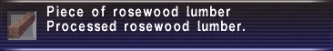

Level 75 reference · Zenith rules

Statistics
Piece of rosewood lumber
Processed rosewood lumber.
Stackable: 12
|
Other Uses
Guild Points Value: None
Used in Quests:
NPC Sell Price: ~980 - 1,004 gil
|
Synthesis Recipes
|
Woodworking (45)
- Yield: Rosewood Lumber x 1
- HQ 1: Rosewood Lumber x 2
- HQ 2: Rosewood Lumber x 3
- HQ 3: Rosewood Lumber x 4
- Wind Crystal
|
Woodworking (45)
- Yield: Rosewood Lumber x 3
- HQ 1: Rosewood Lumber x 6
- HQ 2: Rosewood Lumber x 9
- HQ 3: Rosewood Lumber x 12
- Wind Crystal
 Lumberjack Lumberjack
|
|
Used in Recipes
- Angel's Flute - Woodworking (63)
- Bureau - Woodworking (75), Smithing (41)
- Chiffonier - Woodworking (73), Smithing (26)
- Coffer - Woodworking (63), Goldsmithing (11)
- Commode - Woodworking (77)
- Darksteel Bolt - Smithing (64), Woodworking (
 ) )
- Dresser - Woodworking (85), Goldsmithing (49), Clothcraft ()
- Hume Fishing Rod - Woodworking (74)
- Kanesada +1 - Smithing (88), Woodworking (15)
- Kheten - Smithing (74), Woodworking ()
- Kotetsu +1 - Smithing (84), Woodworking ()
- Noble's Bed - Woodworking (78), Goldsmithing (50), Clothcraft (56)
- Repeating Crossbow - Woodworking (88), Smithing (59), Bonecraft (46)
- Rose Harp - Woodworking (53)
- Rose Wand - Woodworking (47)
- Sainti - Goldsmithing (66), Woodworking ()
- Shield Plaque - Goldsmithing (84), Woodworking (), Clothcraft ()
- Star Globe - Woodworking (96), Goldsmithing (23)
- Wootz Ingot - Smithing (99)
|
|
|
Obtained From Desynthesis
|
How to Obtain
Crafted Only!
Adapted from Eden Wiki: Rosewood Lumber · Contributors and history · CC BY-SA 4.0. Revision 44903. Layout, links and optional background text adapted for Zenith.